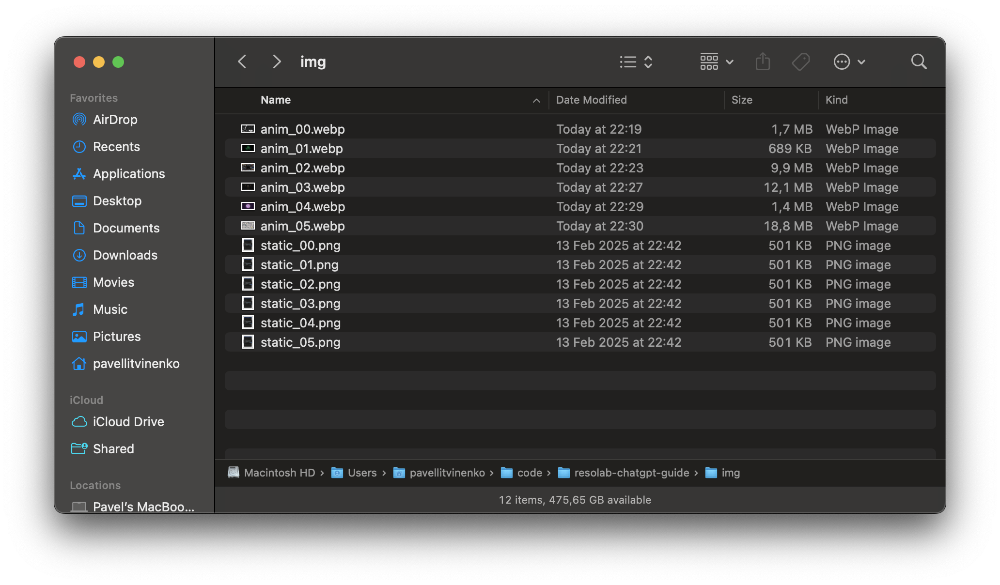
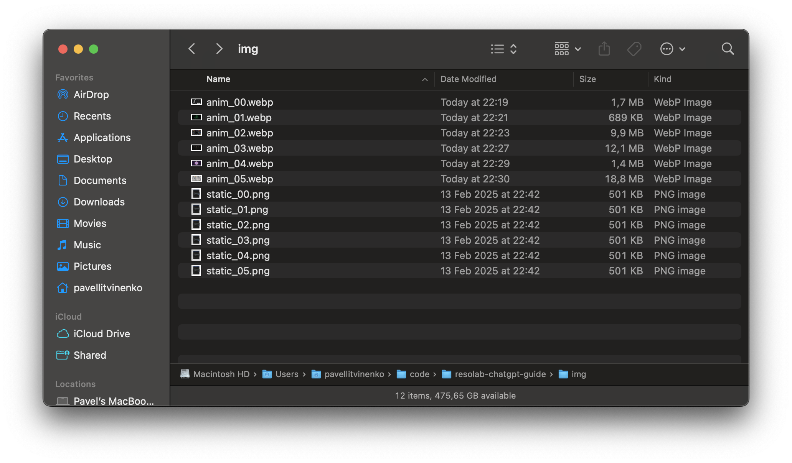
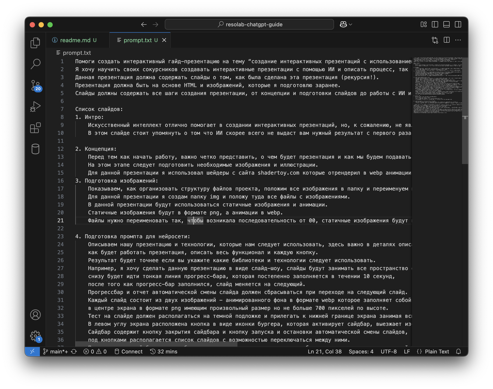
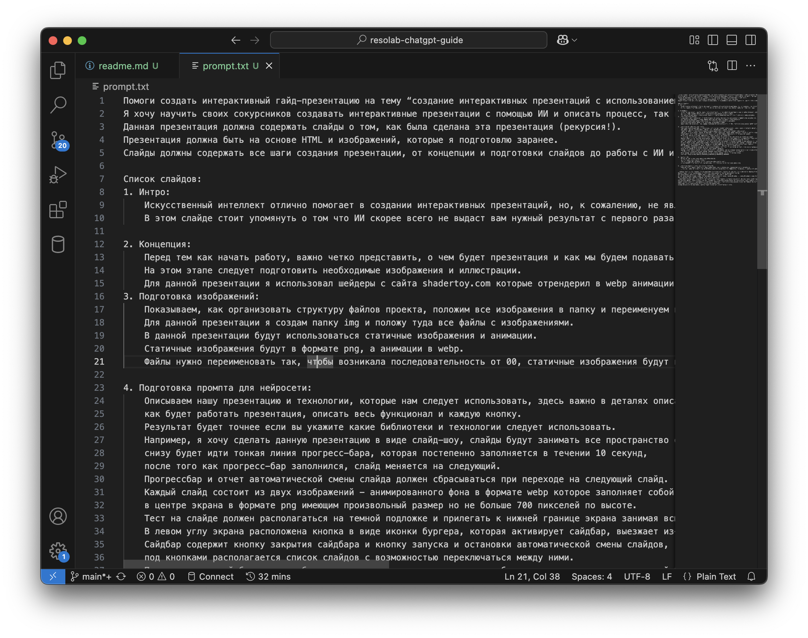
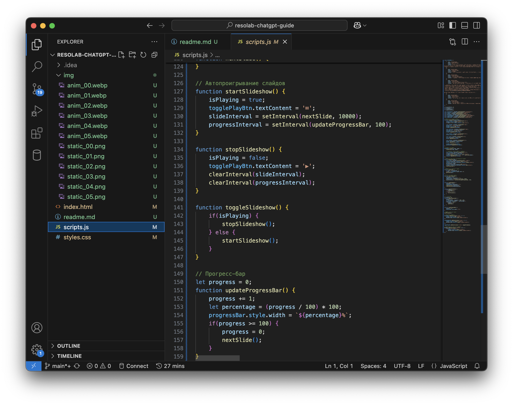
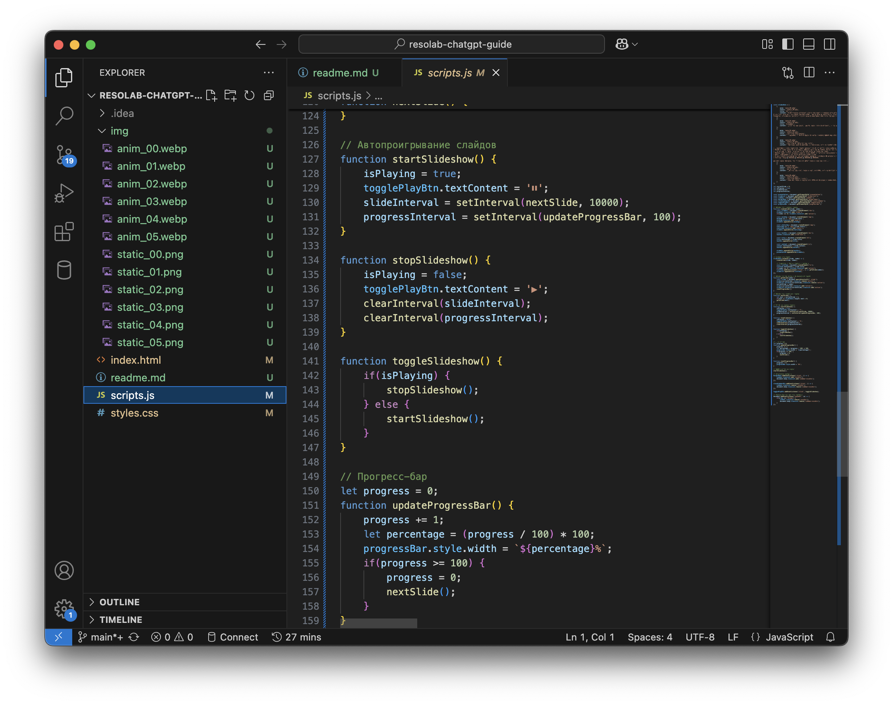

Добро пожаловать!
Привет! В этой презентации мы рассмотрим, как создать интерактивную презентацию с использованием искусственного интеллекта. Учтите, что ИИ может не дать идеальный результат с первого раза, но с каждой итерацией ваш проект будет становиться лучше!
Определение концепции
Перед началом работы важно четко представить, о чем будет ваша презентация и как будет подаваться информация. На этом этапе подготовьте необходимые изображения и иллюстрации. В моей презентации я использовал шейдеры с сайта shadertoy.com, которые отрендерил в webp-анимации.
 

Организация изображений
Следующим шагом является организация структуры файлов проекта. Создайте папку img и поместите туда все изображения и анимации. Статичные изображения должны быть в формате PNG с префиксом static_ (например, static_00.png), а анимации в формате WEBP с префиксом anim_ (например, anim_00.webp). Это обеспечит последовательность и упрощает доступ к ним в коде.
 

Создание промпта
Опишите вашу презентацию и технологии, которые планируете использовать. Важно детально описать функционал и каждую кнопку. Например, я хочу создать слайд-шоу, где каждый слайд занимает весь экран, с прогресс-баром внизу, который заполняется за 10 секунд перед переключением на следующий слайд. Также необходимо предусмотреть боковую панель с управлением, анимации смены слайдов и соответствующую цветовую схему (#222831, #31363F, #76ABAE, #EEEEEE).
Генерация кода с ИИ
Введите подготовленный промпт в нейросеть и ожидайте генерации кода HTML, CSS и JavaScript. Обычно я использую модель o1-mini, но можно экспериментировать с другими сервисами, такими как bolt.new, который отлично подходит для генерации кода.
 

Реализация кода
Скопируйте сгенерированный код в соответствующие файлы: HTML-код в index.html, CSS в styles.css, и JavaScript в scripts.js. Проверьте результат и, при необходимости, повторите предыдущие шаги для улучшения. Терпение и настойчивость помогут вам создать отличную презентацию!